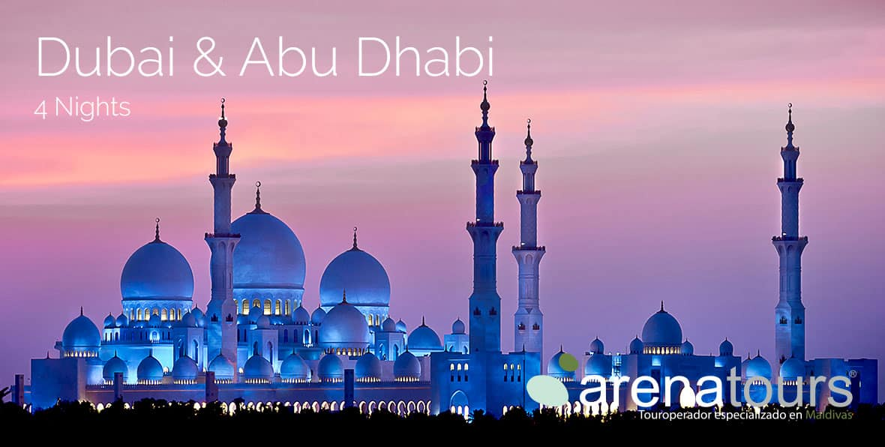

Después del petróleo y comercio, construcción e inmobiliario, el turismo es
considerado como el tercer sector de importancia en la economía de este país.
El éxito de esta industria, aunado a factores como el precio relativamente
bajo de las materias primas, el clima cálido que prevalece durante casi todo el año,
islas artificiales como Burj al-Arab y Palm Islands, y la actitud favorable hacia
Occidente, ha llevado a muchos a llamar a los Emiratos Árabes Unidos como el
Singapur o el Hong Kong del Medio Oriente.
Dubái genera los máximos ingresos para el sector turismo de los Emiratos Árabes
Unidos. Según el gobierno de los EAU, los ingresos obtenidos del turismo son más
altos de lo que genera del petróleo. Los turistas son atraídos por la vida nocturna,
las playas, las compras y estadías de lujo disponibles.61? Además, Dubái organiza
cada año el Arabian Travel Market, la feria de la industria de viajes, reconocida
como el evento líder en la industria de viajes para el Oriente Medio y la puerta de
entrada a esta región.
